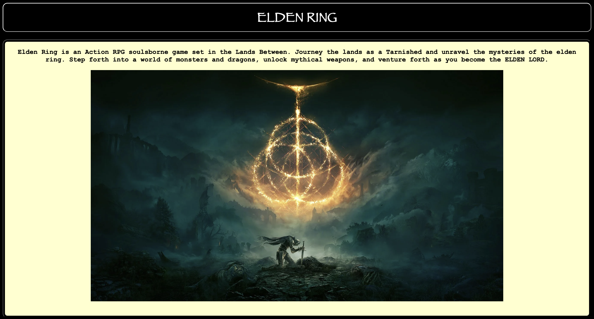
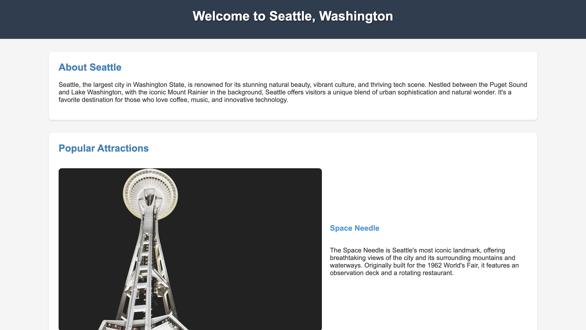
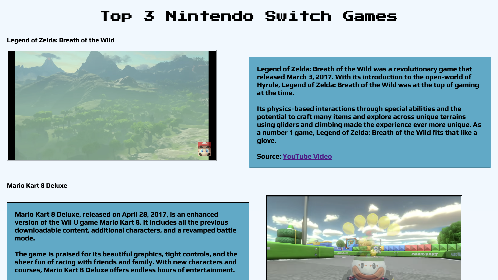

<<<<<<< HEAD
Projects

This website was one of my first developments
learning how to code with HTML and CSS. I thought it
would be fine to make a website inspired by a famous
game and choose to make it thematically match the central idea
of elden ring.

For my next website, I tried to go for a more professional look.
Using more advanced CSS techniques such as grids and flex containers.
I was able to organize the information in a way that felt satisfying.
=======
Projects
>>>>>>> 2d46114e215ad617b63210ba2f8c7388811a27f7

For my other project. I decided for a more fun and class outlook that was still aesthetically pleasing. The idea was to use retro game themes and text to provide a theme about the three best nintendo games in my opinion.